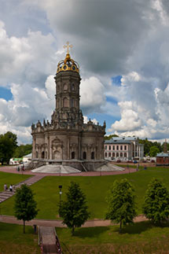
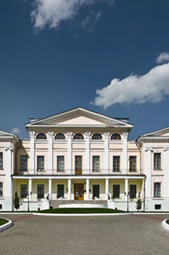

menu
Подольск Усадьба Дубровицы
Другое место
Главная достопримечательность усадьбы - Церковь Знамения (1697). Мы советуем посетить эту усадьбу тем, кто любит расслабиться и отдохнуть от городской суеты на природе.

